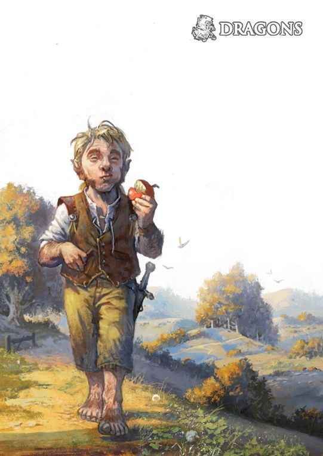

RÉGIS, O HALFLING, O ÚNICO DE SUA ESPÉCIE NUM RAIO DE centenas de quilômetros,
prendeu os dedos por trás da cabeça e recostou-se contra a capa musgosa do tronco da árvore.
Régis era baixo, mesmo para os padrões de sua diminuta raça, e a lanugem de suas madeixas
castanhas e encaracoladas mal ultrapassava a marca de um metro. Mas a barriga alargava-se abundantemente,
devido a seu amor por uma boa refeição — ou várias delas, dependendo das oportunidades que se apresentassem.
O galho retorcido que lhe servia como vara de pesca erguia-se acima dele, seguro entre dois dos seus peludos dedos do pé,
e inclinava-se sobre as águas plácidas do lago, perfeitamente espelhado na superfície vítrea do Maer Dualdon.
– R. A. Salvatore, A Estilha de Cristal
Os confortos de um lar são os objetivos da maioria dos halflings: um lugar para viver em paz e sossego,
longe de monstros saqueadores e embates de exércitos, com um fogo aceso e uma refeição generosa, e também uma bebida fina e boa conversa.
Embora alguns halflings vivam seus dias em remotas comunidades agrícolas, outros formam bandos nômades que viajam constantemente,
atraídos pela estrada afora e o vasto horizonte para descobrir as maravilhas de novas terras e povos.
Mas mesmo esses halflings andarilhos amam a paz, a comida, uma lareira e um lar, mesmo que o lar seja em uma carruagem,
empurrada ao longo de uma estrada de terra, ou uma balsa flutuando rio abaixo.
PEQUENOS E PRÁTICOS
Os pequeninos halflings sobrevivem em um mundo cheio de criaturas maiores ao evitar serem notados, ou evitando o combate direto.
Com uns 90 centímetros de altura, eles parecem inofensivos e assim conseguiram sobreviver por séculos às sombras dos impérios e à
margem de guerras e conflitos políticos. Eles normalmente são robustos, pesando entre 20 kg e 22,5 kg. A pele dos halflings varia
do bronzeado ao pálido com um tom corado, e seu cabelo é geralmente castanho ou castanho claro e ondulado. Eles têm olhos castanhos
ou amendoados. Halflings do sexo masculino muitas vezes ostentam costeletas longas, mas barbas são raras entre eles e bigodes são
quase inexistentes. Eles gostam de usar roupas simples, confortáveis e práticas, preferindo as cores claras.
A praticidade dos halflings se estende para além de suas roupas. Eles se preocupam com as necessidades básicas
e os prazeres simples, e não são inclinados à ostentação. Mesmo o mais rico dos halflings mantém seus tesouros
trancados em um porão, em vez de expostos à vista de todos. Eles possuem um talento especial para encontrar a
solução mais simples para um problema e têm pouca paciência para indecisões.
GENEROSOS E CURIOSOS
Halflings são um povo afável e alegre. Eles apreciam os laços de família e amizade, bem como o conforto do lar e da casa, nutrindo poucos sonhos
de ouro e glória. Mesmo os aventureiros que existem entre eles normalmente aventuram-se no mundo por razões de comunidade,
amizade, desejo de viajar ou curiosidade. Eles amam descobrir coisas novas, até mesmo as mais simples, tais como uma comida
exótica ou um estilo estranho de vestuário. Halflings são facilmente movidos pela piedade e detestam ver qualquer ser vivo sofrer.
Eles são generosos, partilhando alegremente o que eles possuem, mesmo em épocas de vacas magras.
MISTURANDO-SE NA MULTIDÃO
Halflings são adeptos de viver em comunidades de humanos, anões ou elfos, tornando-se valiosos e bemvindos.
A combinação de sua inerente furtividade e sua natureza modesta ajudam os halflings a evitar uma atenção indesejada.
Os halflings trabalham facilmente com os outros, e são leais a seus amigos, sejam eles halflings ou não.
Eles podem demonstrar uma notável ferocidade quando seus amigos, familiares, ou comunidades são ameaçadas.
JOVIALIDADE PASTORIL
A maioria dos halflings vive em comunidades pequenas e pacíficas com grandes fazendas e bosques preservados.
Eles nunca construíram um reino próprio, ou mesmo dominaram muitas terras além de seus tranquilos condados.
Eles geralmente não reconhecem qualquer tipo de nobreza ou realeza halfling, ao invés disso buscam conselhos
com os anciãos de suas famílias para guiá-los. As famílias preservam suas maneiras tradicionais ao despeito da
ascensão e queda de impérios. Muitos halflings vivem entre outras raças onde seu trabalho duro e sua lealdade
os oferece recompensas abundantes e conforto. Algumas comunidades halflings preferem viajar como forma de vida,
dirigindo carruagens ou guiando barcos de lugar em lugar sem manter um lar permanente.
EXPLORANDO OPORTUNIDADES
Halflings geralmente partem para o caminho do aventureiro para defender suas comunidades, apoiar seus amigos,
ou explorar um mundo grande e cheio de maravilhas. Para eles, aventurar-se não é apenas uma carreira,
é mais uma oportunidade ou às vezes uma necessidade.